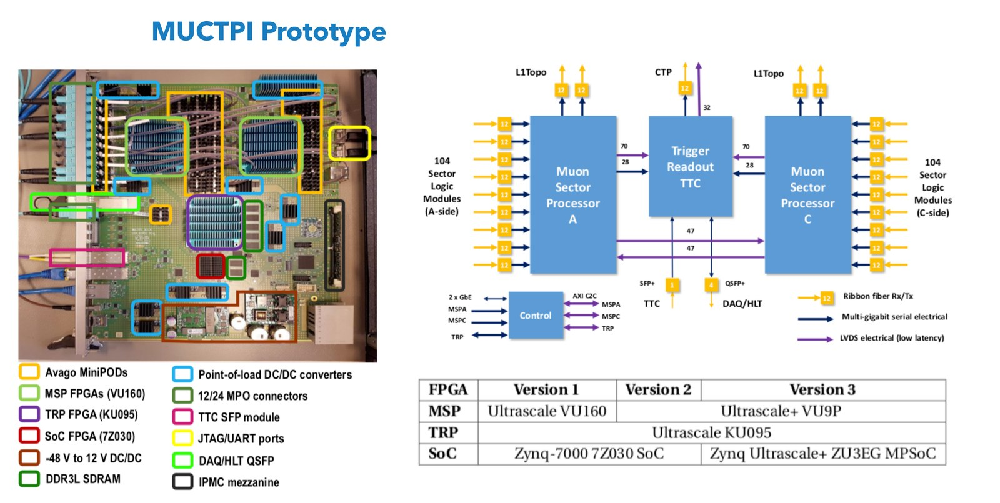
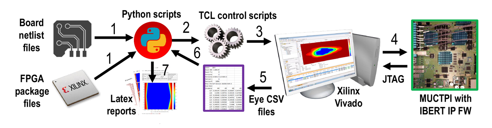

Before an FPGA can use a high-speed link, the firmware has to know three things about it: which transceiver it is connected to, what is at the other end, and whether the two wires of the differential pair are swapped. Usually an engineer reads this off the schematics. On the upgraded muon interface of ATLAS (MUCTPI) there were 334 such links, and I wrote a program to read the board's netlist and produce the answer. It is called PCBpy.
The board
The MUCTPI replaces a crate of 18 VME modules with one ATCA blade. It carries two large Muon Sector Processor FPGAs, a Trigger and Readout Processor FPGA and a system-on-chip for control.
Each sector processor receives 104 optical inputs from the muon sector logic through nine 12-channel receiver modules (Broadcom MiniPOD). It sends muon information to the topological trigger processor over up to 24 links through two transmitter modules. Another 28 transceiver links go from each sector processor to the readout processor on the board itself. The readout processor has one more MiniPOD towards the Central Trigger Processor, an SFP module for the timing signals and a QSFP+ module for the data acquisition.
That is the multi-gigabit part. Next to it there are ordinary differential pairs: 47 between the two sector processors and 70 from each of them to the readout processor.
Three versions of the board were built. The first used Xilinx UltraScale VU160 FPGAs as sector processors and a Zynq-7000 system-on-chip for control. The second moved the sector processors to UltraScale+ VU9P devices. The third kept those and replaced the controller with a Zynq UltraScale+ MPSoC. The readout processor, a Kintex UltraScale KU095, was the same in all three. Each change of FPGA meant a new package, new pin files and a new set of constraints, which is one more reason the connectivity had to come out of a program and not out of someone's notes.

Why the schematics are hard to read
To keep the layout of the printed circuit board manageable, two liberties were allowed. Channels may be swapped: the order of the channels at an optical module need not match the order of the transceivers at the FPGA. And polarities may be inverted: the positive line of a pair at one end may arrive on the negative pin at the other.
Both are harmless as long as the firmware knows about them. The transceiver can invert the polarity of its data for exactly this case, and channel order is a matter of connecting each signal to the right transceiver. But somebody has to supply that information for every link, and it has to be correct.
My thesis describes the manual alternative in one sentence, which I still agree with: reading the schematics thoroughly to extract the connectivity, the pin assignments and the polarities of this many links is very difficult, time-consuming and susceptible to human error.
What PCBpy does
PCBpy is a parser for designs made in Cadence Allegro. It takes two kinds of input: the back-annotated netlist of the board, which lists every net and the component pins attached to it, and the package pin files of the FPGAs. From these it extracts the connectivity and generates three kinds of output.
The first is VHDL wrappers. The second is constraints, for the placement of the signals on the FPGA pins and for the polarity of the links. The third is netlist verification reports.

What it was used for
Finding mistakes before fabrication. Inversions were allowed, but an inversion nobody intended is a mistake. PCBpy detected accidental polarity inversions of differential lines in the MUCTPI schematics. They were found and corrected before the first board had been produced, at a stage when a correction is a change in a drawing.
Starting every firmware project from the same description. The generated wrappers and placement constraints were used for the other firmware developments in all the FPGAs of the MUCTPI, not only for link testing. Typing pin constraints by hand is slow work, and as the thesis notes, generating them speeds up the design flow particularly when the FPGAs are large.
Feeding the link tests. The connectivity and polarity tables are the input of IBERTpy, which uses them to create every link in the vendor's test tool, set its polarity, run bit-error-rate tests and eye scans, and compile a report. Without the first tool the second would have needed a hand-written table of 334 rows, and the table would have been the weak point.
Why a script and not a careful person
I do not think a script is smarter than a careful engineer with the schematics open. The difference is in what happens the second and the tenth time. The script reads every net, every time, in the same way. It does not get tired on page 40. If the layout is revised, it can be run again and the constraints regenerated. And its output is a file that another program can consume, which is what made the automated link tests possible.
There is also a benefit that is easy to miss. Because the netlist is the single source, the firmware and the board cannot drift apart without someone noticing. If a wrapper does not match what the designer expected, either the expectation or the schematic is wrong, and it is better to find out which before anything is manufactured.
Where to find it
PCBpy is open source, published in July 2018 and available on GitHub and PyPI together with IBERTpy and SNpy, the other two packages that came out of my PhD. The repository is the reference for the supported file formats and for how to run it. The description I gave it at the time still fits: a Cadence Allegro PCB schematics parser and verification tool that integrates the PCB into the FPGA design flow.
The results of the link tests that this tool made possible are in the serial link test report (PDF), and the context is in chapter 3 of the thesis (PDF).